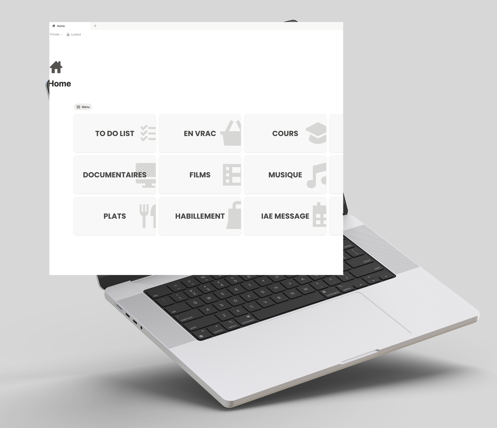

Portfolio · BUT GEA · Parcours GEMA
8 projets, 8 problèmes, 8 solutions. Comment un profil atypique peut-il s'imposer comme une force pour repérer ce qui bloque, structurer ce qui manque et transformer ce qui peut l'être ?
Mon second cerveau Notion — un espace personnel pour organiser mes idées, mes connaissances et mes projets.

Ce que vous voudriez peut-être savoir avant de me contacter.